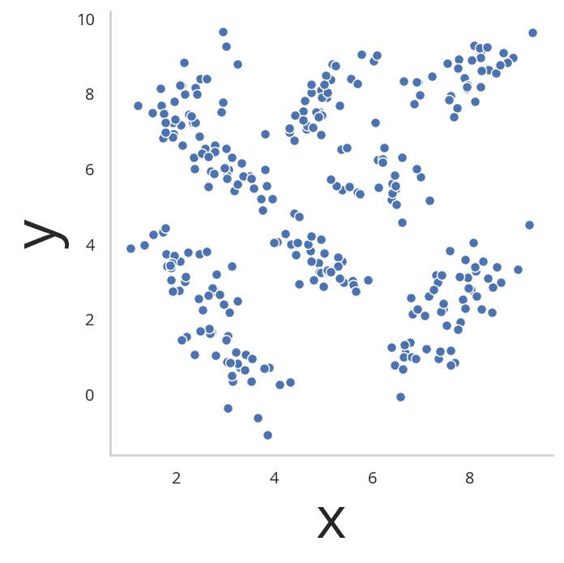
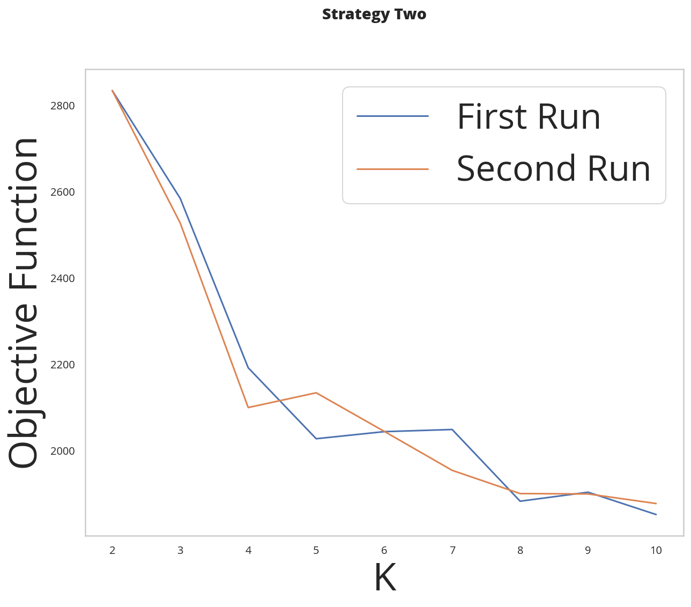

K-Means Clustering 2
Beginning
Imports
Python
from collections import defaultdict, namedtuple
from functools import partial
from pathlib import Path
import os
import random
PyPi
from expects import (
be_true,
expect
)
import dotenv
import hvplot.pandas
import matplotlib.pyplot as pyplot
import numpy
import pandas
import seaborn
from tabulate import tabulate
Coursera
from cse_575.coursera.Precode2 import initial_S2
Others
from graeae import EmbedHoloviews
Set Up
Tables
TABLE = partial(tabulate, tablefmt="orgtbl", showindex=False, headers="keys")
Plotting
SLUG = "k-means-clustering-2"
OUTPUT_PATH = Path(f"../files/notebooks/{SLUG}")
Embed = partial(EmbedHoloviews, folder_path=OUTPUT_PATH)
get_ipython().run_line_magic('matplotlib', 'inline')
get_ipython().run_line_magic('config', "InlineBackend.figure_format = 'retina'")
seaborn.set(style="whitegrid",
rc={"axes.grid": False,
"xtick.labelsize": 10,
"ytick.labelsize": 10,
"font.size": 12,
"font.family": ["sans-serif"],
"font.sans-serif": ["Open Sans", "Latin Modern Sans", "Lato"],
"figure.figsize": (10, 8)},
font_scale=3)
The Data
dotenv.load_dotenv(override=True)
DATA_PATH = Path(os.environ["KNN_DATA"]).expanduser()
data = numpy.load(DATA_PATH)
frame = pandas.DataFrame(data, columns=["x", "y"])
print(data.shape)
(300, 2)
Middle
The Data
figure, axe = pyplot.subplots()
figure.suptitle("X vs Y", weight="bold")
seaborn.relplot(x="x", y="y", data=frame, ax=axe)

Coursera's Splitting
The initial_S2 gives you the k and initial centroid to use for submissions. Calling it also sets the random seed.
STUDENT_ID = os.environ["STUDENT_ID"]
k1,i_point1,k2,i_point2 = initial_S2(STUDENT_ID, data)
print(f"{k1}: {i_point1}")
print(f"{k2}: {i_point2}")
Strategy 2: k and initial points 4: [3.81135136 5.98125361] 6: [2.16641743 2.99414637]
Initial Points
The main difference between this section and the prior one is that instead of choosing all the initial points at random you pick one point at random and the for each of the remaining centroids you calculate the average distance between each point and all the previous centroids then you pick the point that is the furthest from the previous centroids (on average).
First Points
def random_point(points: numpy.array) -> numpy.array:
"""get a random point from the data
Args:
points: the source of the points
Return:
random entry in the data
"""
return points[random.randrange(len(points)), :]
print(random_point(data))
print(random_point(data))
[2.58046907 6.53023549] [6.46270852 5.83507122]
The Initial Points
def initial_centers(points: numpy.array, k: int,
debug: bool=False,
first: numpy.array=None) -> numpy.array:
"""Get the initial centers of gravity
Starts with a random point and from then on picks the point the furthest
from the center of the previously chosen centroids
Args:
points: source of the points (the data)
k: number of clusters we want
debug: whether to emit messages
first: the starting centroid (otherwise a random one will be picked)
Returns:
numpy.array: the initial k centroids taken from the points
"""
ACROSS_ROWS, ACROSS_COLUMNS = 0, 1
candidates = points.copy()
centroids = numpy.empty((k, len(points[0])))
centroids[0] = first if first is not None else random_point(points)
if debug:
print(f"First Centroid: {centroids[0]}")
# to avoid duplicate starting centroids
candidates = numpy.delete(candidates, numpy.where(
(candidates == centroids[0]).all(axis=ACROSS_COLUMNS)),
axis=ACROSS_ROWS
)
for center in range(1, k):
centroids[center] = candidates[
numpy.argmax(
[numpy.mean(
numpy.sum(
numpy.square(
point - centroids
),
axis=ACROSS_COLUMNS
)
) for point in points]
)]
candidates = numpy.delete(candidates, numpy.where(
(candidates == centroids[center]).all(axis=ACROSS_COLUMNS)),
axis=ACROSS_ROWS
)
return centroids
From the Previous Section
The rest of the exercise is the same as the previous exercise.
Clusters
This is just a namedtuple to hold the clusters and centroids.
Clusters = namedtuple("Clusters", ["clusters", "centroids"])
Get Centroids
def update_centroids(centroids: numpy.array, points: numpy.array) -> Clusters:
"""Get updated centroids
Args:
centroids: previous set of centroids
points: points to cluster (shape = n rows, 2 columns)
Returns:
Clusters namedtuple
"""
clusters = defaultdict(list)
for point in points:
distances = numpy.sum(numpy.square(point - centroids), axis=1)
closest = numpy.argmin(distances)
clusters[closest].append(point)
clusters = numpy.array(list(clusters.values()))
assert len(clusters) == len(centroids), f"clusters: {clusters}"
centroids= numpy.array([
numpy.mean(cluster, axis=0)
for cluster in clusters
])
return Clusters(centroids=centroids, clusters=clusters)
The Objective Function
The objective of training is to minimize the variation within a cluster. In this case we're measuring that as the sum of the squared distances from the points within a cluster to the mean of the cluster.
\[ \sum_{i=1}^K \sum_{x \in D_i} \lVert x - \mu_i \rVert^2 \]
def objective(clusters: numpy.array) -> float:
"""calculates the variation within clusters
Args:
clusters: array (or other iterable of points in the clusters)
Returns:
the score for the cluster variation
"""
variation = 0
for cluster in clusters:
center = numpy.mean(cluster)
variation += (
numpy.sum(
numpy.square(
cluster - center
)
)
)
return variation
Putting Them All Together
def k_means(k: int, data: numpy.array,
debug: bool=False,
centroids: numpy.array=None) -> Clusters:
"""Calculates the k-means clusters and the variance
Args:
k: number of clusters to create
data: the source of the points to cluster
debug: whether to emit messages
initial_centroids: pre-chosen initial centroids (otherwise random)
"""
centroids = (centroids if centroids is not None
else initial_centers(points=data, k=k, debug=debug))
if debug:
print(f"k_means starting centroids: {centroids}")
assert len(centroids) == k
while True:
updated = update_centroids(centroids, data)
if (numpy.sort(centroids) == numpy.sort(updated.centroids)).all():
break
centroids = updated.centroids
return updated
K From Two To Ten
Outcomes = namedtuple("Outcomes", ["losses", "points"])
def grid_search(minimum_k: int=2,
maximum_k: int=10,
data: numpy.array=data) -> Outcomes:
"""Runs K-means over a range of K"""
losses = {}
outcomes = {}
for k in range(minimum_k, maximum_k + 1):
outcome = k_means(k, data)
loss = objective(outcome.clusters)
losses[k] = loss
outcomes[k] = outcome
losses = pandas.DataFrame(dict(K=list(losses.keys()),
Loss=list(losses.values())))
return Outcomes(losses=losses, points=outcomes)
outcomes = grid_search()
print(TABLE(outcomes.losses))
| K | Loss |
|---|---|
| 2 | 2833.41 |
| 3 | 2583.62 |
| 4 | 2191.29 |
| 5 | 2026.99 |
| 6 | 1962.44 |
| 7 | 2048.34 |
| 8 | 1899.93 |
| 9 | 1889.84 |
| 10 | 1936.32 |
plot = outcomes.losses.hvplot.bar(x="K", y="Loss").opts(
height=800, width=1000, title="Loss by K")
embedded = Embed(plot=plot, file_name="loss_vs_k")()
print(embedded)
It looks like 6 clusters is about as much as you want to go.
data_frame = pandas.DataFrame(data, columns=["x", "y"])
ten_frame = pandas.DataFrame(outcomes.points[10].centroids, columns=["x", "y"])
def plot_clusters(outcomes: Outcomes, k: int, data: numpy.array=data):
data_frame = pandas.DataFrame(data, columns=["x", "y"])
center_frame = pandas.DataFrame(outcomes.points[k].centroids,
columns=["x", "y"])
plots = center_frame.hvplot.scatter(
x="x", y="y",
s=100, c="k", marker="+")
for cluster in outcomes.points[k].clusters:
c_frame = pandas.DataFrame(cluster, columns=["x", "y"])
plots *= c_frame.hvplot.scatter(x="x", y="y")
plot = (plots).opts(width=1000, height=800, title=f"Clusters K={k}")
return Embed(plot=plot, file_name=f"clusters_{k}")()
embedded = plot_clusters(outcomes, 10)
print(embedded)
This does sort of look like the clusters did a little better than the random centroids did, but there's a cluster with only one point at the top right of the plot. It's probably overfitting.
End
Submissions
Plotting the two runs
outcomes_2 = grid_search()
figure, axe = pyplot.subplots()
figure.suptitle("Strategy Two", weight="bold")
outcomes.losses["Run"] = "First"
outcomes_2.losses["Run"] = "Second"
outcomes.losses.plot(x="K", y="Loss", label="First Run", ax=axe)
outcomes_2.losses.plot(x="K", y="Loss", label="Second Run", ax=axe)
axe.set_ylabel("Objective Function")

It kind of looks like either k=4 or k=6 is the actual optimum (based on the assumption that the biggest drop indicates the right level).
embedded = plot_clusters(outcomes_2, 2)
print(embedded)
embedded = plot_clusters(outcomes_2, 3)
print(embedded)
embedded = plot_clusters(outcomes_2, 4)
print(embedded)
embedded = plot_clusters(outcomes_2, 5)
print(embedded)
embedded = plot_clusters(outcomes_2, 6)
print(embedded)
embedded = plot_clusters(outcomes_2, 7)
print(embedded)
embedded = plot_clusters(outcomes_2, 8)
print(embedded)
embedded = plot_clusters(outcomes_2, 9)
print(embedded)
embedded = plot_clusters(outcomes_2, 10)
print(embedded)
Since the points don't have any meaning (at least not to me) it's hard to say what the best clustering effects are. One of the problems with this dataset (with regards to k-means) is that the data that looks contiguous isn't necessary clustered in circles, which is what the k-means requires to work best. I think that 9 clusters has the "cleanest" clustering, at least visually.
The ID-Specific Data
For the numeric submission we need to run k-means over the two points that their pre-defined functions produced.
Submission = namedtuple("Submission", ["clusters", "centroids", "loss"])
def check_centroids(centroids: numpy.array,
debug: bool=False,
data: numpy.array=data) -> Submission:
"""Check the outcome with pre-initialized centroids
Args:
centroids: initial centroids for the k-means algorithm
debug: whether to emit messages
data: points to cluster
"""
outcome = k_means(k=len(centroids), centroids=centroids, data=data,
debug=debug)
score = objective(outcome.clusters)
return Submission(clusters=outcome.clusters, centroids=outcome.centroids,
loss=score)
First Check
centroids_1 = initial_centers(k=k1, points=data, first=i_point1, debug=True)
outcome_3 = check_centroids(centroids=centroids_1, debug=True)
print(f"\nK: {k1}")
print(f"Final Centroids:\n{outcome_3.centroids}")
print(f"\nObjective Function: {outcome_3.loss}")
First Centroid: [3.81135136 5.98125361] k_means starting centroids: [[3.81135136 5.98125361] [4.59083727 7.53490523] [4.9511002 8.08344216] [1.9311184 6.93692984]] K: 4 Final Centroids: [[2.45162074 6.08990448] [7.79475201 8.45021454] [5.46810558 2.23600141] [5.44895368 6.72531296]] Objective Function: 2356.702968522488
Second Check
centroids_2 = initial_centers(k=k2, points=data, first=i_point2, debug=True)
outcome_4 = check_centroids(centroids=centroids_2, debug=True)
print(f"\nK: {k2}")
print(f"Final Centroids:\n{outcome_4.centroids}")
print(f"\nObjective Function: {outcome_4.loss}")
First Centroid: [2.16641743 2.99414637] k_means starting centroids: [[2.16641743 2.99414637] [9.26998864 9.62492869] [2.37650624 8.15241778] [3.2881521 0.71796855] [3.2115245 1.1089788 ] [4.66005931 7.06059555]] K: 6 Final Centroids: [[2.56333815 6.9782248 ] [7.75648325 8.55668928] [7.41419243 2.32169114] [3.49556658 3.56611232] [5.46427736 6.83771354] [3.14506148 0.90770655]] Objective Function: 1963.908359892354